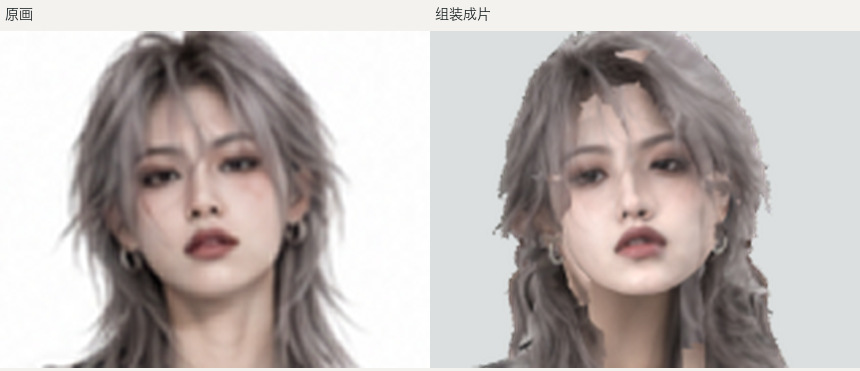
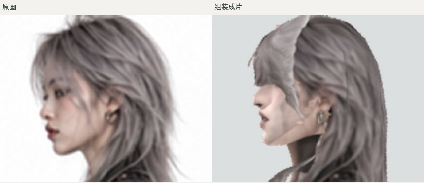
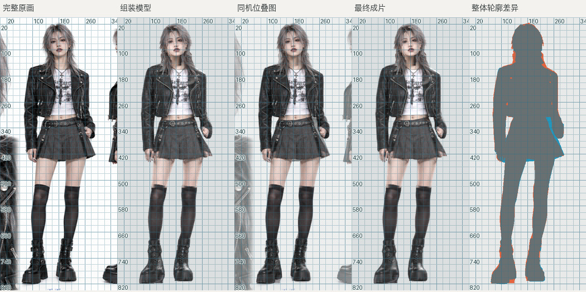
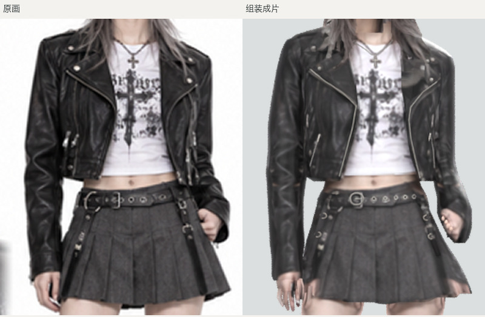
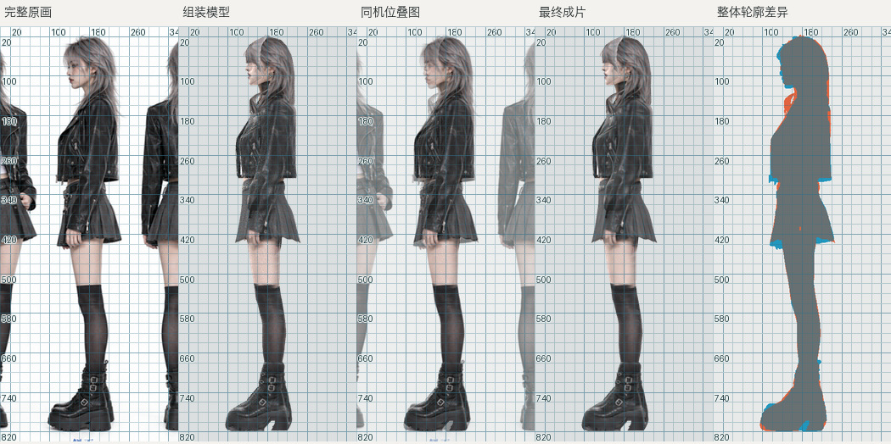
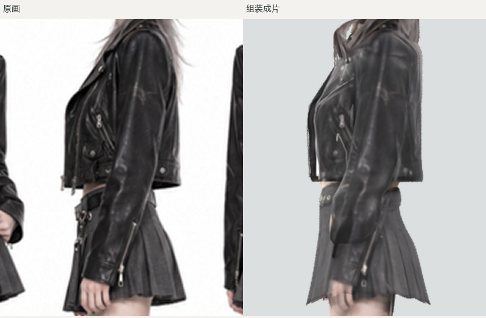
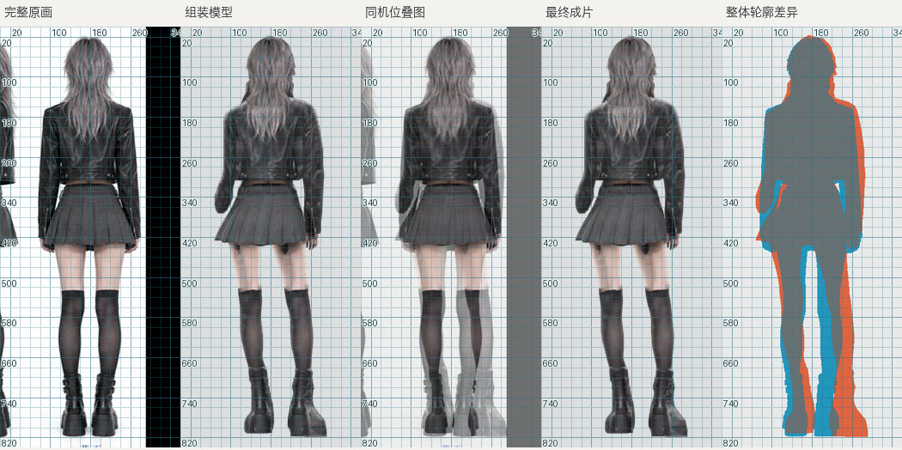
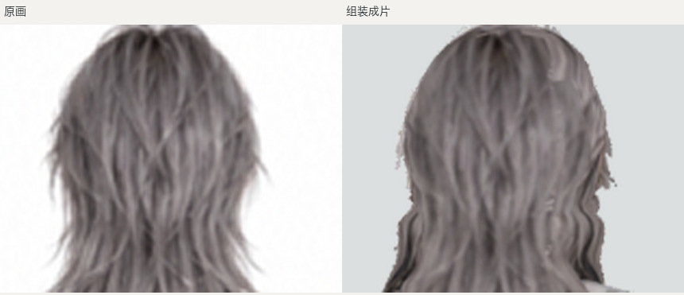
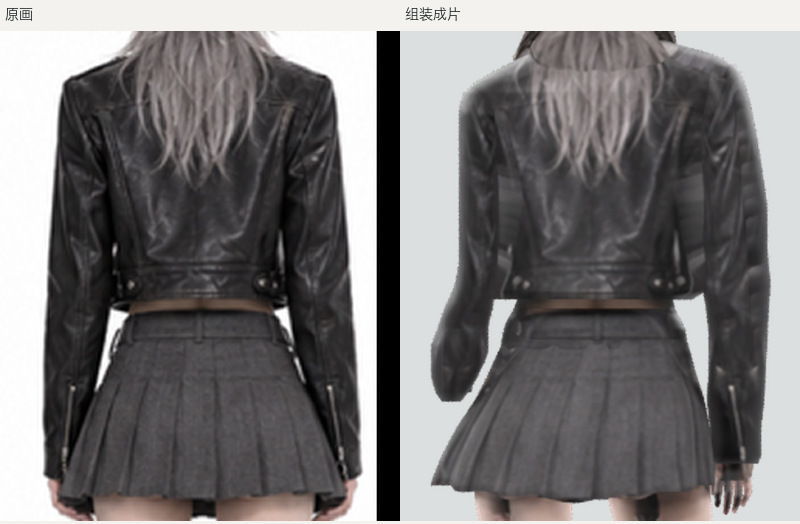

整体与逐件网格对照
蓝色为原画有而模型缺少的区域，橙色为模型多出的区域。灰色为重合，灰紫色为排除区。网格标注采用该栏原画的像素坐标，偏移为模型减原画，向右、向下为正。
逐段边界图中，白线连接模型边与原画目标，蓝圈标目标。红色表示搜索内缺边，紫色表示有多个候选，灰色表示画幅或遮挡证据不足。
完整测量记录
高精度对照 有部位需返修
本次覆盖 3/3 栏、3/3 件。已核对 1 项。
需返修 15 项 front 整体轮廓、front 可见发层、front 头脸与颈部、front 鞋履与鞋底、front 眉眼鼻唇、side 整体轮廓、side 可见发层、side 头脸与颈部、side 鞋履与鞋底、side 额鼻唇颏、back 整体轮廓、back 可见发层、back 鞋履与鞋底、back 后脑与领口、头脸与颈部多视图面部核对
待核对 3 项 front 机车皮衣的开襟和印花短T、side 机车皮衣的开襟和印花短T、back 机车皮衣的开襟和印花短T
头脸与颈部 · 面部多视图
侧向机位符合配置，绕头部上下轴的夹角 +90.0°，侧面仰俯 -0.0°
正面 需返修
原图裁框 158 × 124 px

同位置细网格 右外眼角 偏差最大，1.02 px，修向原画 (-0.4, +0.9) px侧面 需返修
原图裁框 158 × 124 px

同位置细网格 唇缘 偏差最大，10.00 px，修向原画 (-0.0, +10.0) px仍需处理的局部
front

需返修 原尺寸叠图 整体逐段边界定位轮廓交并比 0.954，缺少 1635 px²，多出 3149 px²
包围框左、上、右、下偏移 +1 / -4 / -1 / -2 px
原画沿法线找模型 最大 17.56 px，P95 6.08 px，匹配 3275/3450，搜索内缺边 122，多解 53，画幅不足 0
模型沿法线找原画 最大 17.75 px，P95 6.17 px，匹配 3355/3708，搜索内缺边 319，多解 28，画幅不足 6
最大可定位偏差处，模型 (139.7, 817.5) 向原画位移 (-14.4, -10.4) px造型与神态 需返修
眉眼鼻唇 需返修 下唇和眼距接近，灰发分缝和面颊两侧的碎发较粗。对照标点 1 右外眼角 2 左外眼角 3 鼻尖 4 唇缝 5 颏点

机车皮衣的开襟和印花短T 待核对 分件
- 可见发层 需返修 整幅网格 · 局部网格 · 穿戴与遮挡 · 逐段边界定位
轮廓交并比 0.766，缺少 659 px²，多出 1396 px²
包围框左、上、右、下偏移 +0 / -4 / -1 / -1 px
原画沿法线找模型 最大 18.00 px，P95 10.82 px，匹配 962/1472，搜索内缺边 124，多解 386，画幅不足 0
模型沿法线找原画 最大 17.95 px，P95 11.88 px，匹配 1028/1474，搜索内缺边 48，多解 392，画幅不足 6
最大可定位偏差处，模型 (204.1, 108.9) 向原画位移 (+9.4, -15.3) px
- 头脸与颈部 需返修 整幅网格 · 局部网格 · 穿戴与遮挡 · 逐段边界定位
轮廓交并比 0.779，缺少 354 px²，多出 705 px²
包围框左、上、右、下偏移 +12 / -13 / -10 / +14 px
原画沿法线找模型 最大 17.19 px，P95 14.00 px，匹配 290/434，搜索内缺边 68，多解 76，画幅不足 0
模型沿法线找原画 最大 17.89 px，P95 14.79 px，匹配 385/522，搜索内缺边 78，多解 59，画幅不足 0
最大可定位偏差处，模型 (177.9, 59.5) 向原画位移 (-17.9, +0.8) px
- 鞋履与鞋底 需返修 整幅网格 · 局部网格 · 穿戴与遮挡 · 逐段边界定位
轮廓交并比 0.891，缺少 522 px²，多出 924 px²
包围框左、上、右、下偏移 +1 / -3 / -1 / -2 px
原画沿法线找模型 最大 16.00 px，P95 6.12 px，匹配 789/882，搜索内缺边 3，多解 90，画幅不足 0
模型沿法线找原画 最大 17.94 px，P95 12.43 px，匹配 934/1448，搜索内缺边 503，多解 11，画幅不足 0
最大可定位偏差处，模型 (113.1, 737.5) 向原画位移 (-17.1, +5.4) px
side

需返修 原尺寸叠图 整体逐段边界定位轮廓交并比 0.935，缺少 2252 px²，多出 2111 px²
包围框左、上、右、下偏移 -1 / -3 / +2 / -1 px
原画沿法线找模型 最大 18.00 px，P95 9.00 px，匹配 2212/2380，搜索内缺边 97，多解 71，画幅不足 0
模型沿法线找原画 最大 17.99 px，P95 9.11 px，匹配 2316/2550，搜索内缺边 212，多解 20，画幅不足 2
最大可定位偏差处，模型 (131.0, 309.5) 向原画位移 (-18.0, +0.0) px造型与神态 需返修
额鼻唇颏 需返修 鼻唇整体位置较高，眼前发片较厚。对照标点 1 鼻尖 2 唇缘 3 颏前

机车皮衣的开襟和印花短T 待核对 分件
- 可见发层 需返修 整幅网格 · 局部网格 · 穿戴与遮挡 · 逐段边界定位
轮廓交并比 0.810，缺少 810 px²，多出 1096 px²
包围框左、上、右、下偏移 +3 / -3 / -2 / +33 px
原画沿法线找模型 最大 17.25 px，P95 11.28 px，匹配 648/970，搜索内缺边 174，多解 148，画幅不足 0
模型沿法线找原画 最大 17.99 px，P95 13.72 px，匹配 788/1042，搜索内缺边 160，多解 92，画幅不足 2
最大可定位偏差处，模型 (144.1, 154.5) 向原画位移 (+18.0, -0.8) px
- 头脸与颈部 需返修 整幅网格 · 局部网格 · 穿戴与遮挡 · 逐段边界定位
轮廓交并比 0.751，缺少 432 px²，多出 203 px²
包围框左、上、右、下偏移 +7 / -25 / +0 / +14 px
原画沿法线找模型 最大 17.12 px，P95 9.58 px，匹配 239/358，搜索内缺边 24，多解 95，画幅不足 0
模型沿法线找原画 最大 17.87 px，P95 11.35 px，匹配 335/498，搜索内缺边 107，多解 56，画幅不足 0
最大可定位偏差处，模型 (187.5, 102.0) 向原画位移 (-8.0, -16.0) px
- 鞋履与鞋底 需返修 整幅网格 · 局部网格 · 穿戴与遮挡 · 逐段边界定位
轮廓交并比 0.913，缺少 588 px²，多出 462 px²
包围框左、上、右、下偏移 -1 / -3 / -1 / -1 px
原画沿法线找模型 最大 18.00 px，P95 7.41 px，匹配 537/566，搜索内缺边 8，多解 21，画幅不足 0
模型沿法线找原画 最大 17.17 px，P95 8.19 px，匹配 593/712，搜索内缺边 119，多解 0，画幅不足 0
最大可定位偏差处，模型 (184.5, 802.0) 向原画位移 (+0.0, +18.0) px
back

需返修 原尺寸叠图 整体逐段边界定位轮廓交并比 0.716，缺少 14976 px²，多出 18306 px²
包围框左、上、右、下偏移 -8 / -4 / +11 / +1 px
原画沿法线找模型 最大 18.00 px，P95 15.33 px，匹配 2341/3194，搜索内缺边 812，多解 41，画幅不足 0
模型沿法线找原画 最大 18.00 px，P95 15.48 px，匹配 2520/3708，搜索内缺边 1169，多解 15，画幅不足 4
最大可定位偏差处，模型 (209.0, 536.5) 向原画位移 (-18.0, +0.0) px造型与神态 需返修

后脑与领口 需返修 后发长度和夹克下摆可辨，原画的背面使用第二帧比较。
机车皮衣的开襟和印花短T 待核对 分件
- 可见发层 需返修 整幅网格 · 局部网格 · 穿戴与遮挡 · 逐段边界定位
轮廓交并比 0.628，缺少 5089 px²，多出 1236 px²
包围框左、上、右、下偏移 -7 / -4 / +1 / -66 px
原画沿法线找模型 最大 17.42 px，P95 11.44 px，匹配 414/996，搜索内缺边 554，多解 28，画幅不足 0
模型沿法线找原画 最大 17.64 px，P95 10.94 px，匹配 467/620，搜索内缺边 134，多解 15，画幅不足 4
最大可定位偏差处，模型 (138.5, 156.1) 向原画位移 (-5.5, +16.8) px
- 头脸与颈部 遮挡符合原画 整幅网格 · 局部网格 · 穿戴与遮挡 本栏穿戴状态下仅有遮挡，无可单独描出的该件。
- 鞋履与鞋底 需返修 整幅网格 · 局部网格 · 穿戴与遮挡 · 逐段边界定位
轮廓交并比 0.263，缺少 5638 px²，多出 8095 px²
包围框左、上、右、下偏移 +6 / -6 / +57 / +1 px
原画沿法线找模型 最大 17.88 px，P95 17.00 px，匹配 365/800，搜索内缺边 433，多解 2，画幅不足 0
模型沿法线找原画 最大 18.00 px，P95 17.13 px，匹配 381/848，搜索内缺边 465，多解 2，画幅不足 0
最大可定位偏差处，模型 (186.0, 766.5) 向原画位移 (-18.0, +0.0) px